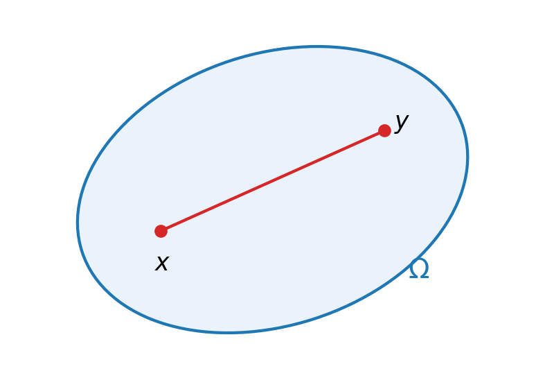
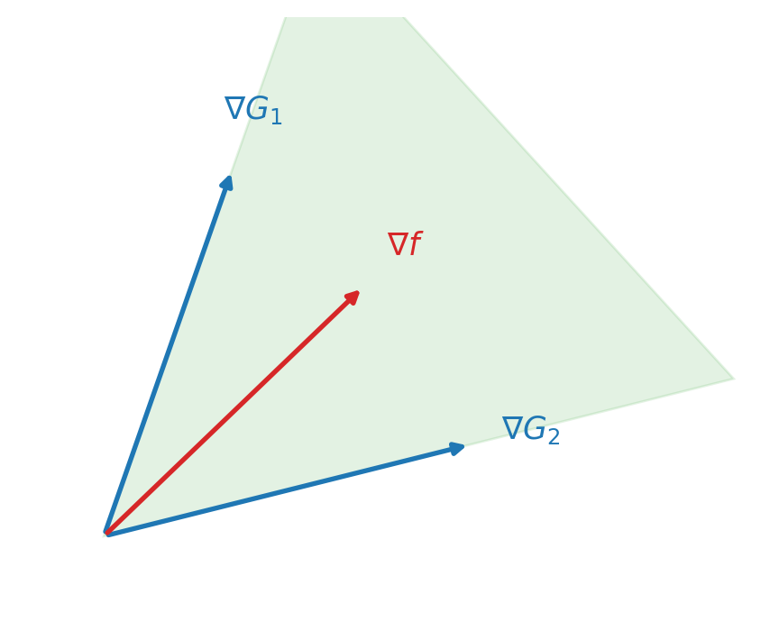
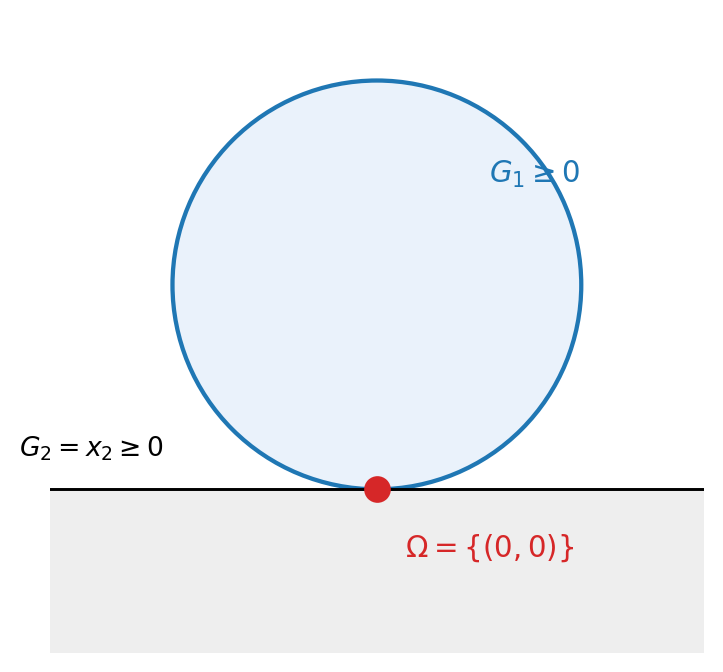

4 Theory of Constrained Optimization
4.1 Constrained optimization problem
\[ \min_{x\in\mathbb{R}^n} f(x), \quad \text{s.t.}\quad \begin{cases} G_i(x) = 0, & i\in\mathcal{E} \quad\to\ \text{equality constrained} \\ G_i(x) \geq 0, & i\in\mathcal{I} \quad\to\ \text{inequality constrained} \end{cases} \]
4.2 Some terminology
Feasibility set — \(x\) that satisfies the constraints. \[ \Omega := \{\, x \mid G_i(x)=0,\ i\in\mathcal{E},\ \ G_i(x)\geq 0,\ i\in\mathcal{I} \,\} \]
- Non-smooth \(\Omega\) can be represented by smooth constraints.
Definition 4.1 (Global minimizer) \(x^\ast\in\Omega\) is called a global minimizer on \(\Omega\) if \(f(x^\ast)\leq f(x)\), \(\forall x\in\Omega\).
Definition 4.2 (Local minimizer) \(x^\ast\in\Omega\) is called a local minimizer on \(\Omega\) if there exists a neighbourhood \(N\) of \(x^\ast\) s.t. \(f(x^\ast)\leq f(x)\), \(\forall x\in N\cap\Omega\); or \[ \exists\,\varepsilon>0,\ \text{s.t.}\ f(x^\ast)\leq f(x),\ \forall x\in\Omega\cap B_\varepsilon(x^\ast) := \{x\in\mathbb{R}^n \mid \lVert x-x^\ast\rVert<\varepsilon\}. \]
Definition 4.3 (Strict / strong local minimizer) Strict inequality: \[ \exists\,\varepsilon>0,\ \text{s.t.}\ f(x^\ast) < f(x),\ \forall x\neq x^\ast \text{ and } x\in\Omega\cap B_\varepsilon(x^\ast). \]
Definition 4.4 (Isolated local minimizer) \[ \exists\,\varepsilon>0,\ \text{s.t.}\ x^\ast \text{ is the only local minimizer in } \Omega\cap B_\varepsilon(x^\ast). \]
- isolated local minimizer \(\Rightarrow\) local minimizer.
Definition 4.5 (Convex set) A set \(\Omega\subseteq\mathbb{R}^n\) is called a convex set if \(\forall x,y\in\Omega\) and \(\forall\lambda\in[0,1]\), \[ \lambda x + (1-\lambda)y \in \Omega. \]
Remark: if \(f(x)\) is a convex function and \(\Omega\) is a convex set, then any local minimal is a global minimal.
4.3 Optimality condition
Similarly to the unconstrained case, conditions for judging a local minimum for \(C^1\) & \(C^2\) \(f, G_i\) can be given.
Terminology / Def
Definition 4.6 (Active set) The equality constraint & the boundary of an inequality: \[ A(x) := \{\, i\in\mathcal{E}\cup\mathcal{I} : G_i(x)=0 \,\} \] is called the active set at any feasible point.
Remark: Noticed that this is useful as the constraint that is not strictly at the boundary at \(x\) can be disregarded, as a small neighbourhood of \(x\) can always be found s.t. the constraint is disregarded.
Definition 4.7 (Cone) \(C\) is called a cone if \(\forall x\in C\) and \(\alpha\in\mathbb{R}^{+}\), \(\alpha x\in C\).
- A cone might not be a convex set.
First-order consideration
Consider a move \(x\to x+\alpha p\): \[ \begin{cases} f(x+\alpha p) \approx f(x) + \alpha\nabla f^{\mathsf T}p \\ G_i(x+\alpha p) \approx G_i(x) + \alpha\nabla G_i^{\mathsf T}p \end{cases} \qquad (\text{linearize the boundaries}) \]
If we wish \(x+\alpha p\) is still a feasible point, we wish \[ \begin{cases} G_i(x) + \alpha\nabla G_i^{\mathsf T}p = 0, & i\in\mathcal{E} \\ G_i(x) + \alpha\nabla G_i^{\mathsf T}p \geq 0, & i\in\mathcal{I} \end{cases} \;\Rightarrow\; \begin{cases} \nabla G_i^{\mathsf T}p = 0, & i\in\mathcal{E} \\ G_i(x) + \alpha\nabla G_i^{\mathsf T}p \geq 0, & \text{if } G_i(x)>0 \\ \nabla G_i^{\mathsf T}p \geq 0, & \text{if } G_i(x)=0 \end{cases} \]
- \(i\in\mathcal{I}\), and \(G_i(x)>0\) \(\to\) \(x\) is strictly inside the feasible region. We can always find \(\alpha\) s.t. \(G_i(x)+\alpha\nabla G_i^{\mathsf T}p\geq 0\).
- \(i\in\mathcal{I}\), and \(G_i(x)=0\) \(\to\) \(x\) is at the boundary of the inequality constraint, and we need \(\nabla G_i^{\mathsf T}p\geq 0\), \(i\in A(x)\cap\mathcal{I}\) (the intersecting region between hyperplanes).
In another word, if \(x^\ast\) is a local minimal, then any feasible direction would cause \(f\) to increase.
\(\nabla^{\mathsf T}f\) has to be the linear combination of the normal vector of the hyperplanes: \[ \nabla f = \sum_i \lambda_i \nabla G_i(x), \quad i\in\mathcal{E}\cup(A(x)\cap\mathcal{I}), \qquad \text{Lagrangian multiplier } \lambda_i\geq 0 \]

We can combine this with the non-active constraint and require \[ \nabla f^{\mathsf T}p = \sum_{i\in\mathcal{E}\cup\mathcal{I}} \lambda_i \nabla G_i^{\mathsf T}p, \qquad \& \quad \lambda_i G_i(x)=0,\ i\in\mathcal{E}\cup\mathcal{I} \]
This condition implies that if \(G_i(x)>0\) (not active), \(\lambda_i=0\) for sure. This is the familiar Lagrangian multiplier: \[ \mathcal{L} := f - \sum_{i\in\mathcal{E}\cup\mathcal{I}} \lambda_i G_i(x). \]
First-order optimality condition (KKT)
Theorem 4.1 (First-order optimality condition (KKT)) Suppose \(x^\ast\) is a local solution, and \(f\) and \(G_i\) are all \(C^1\), and LICQ holds at \(x^\ast\). Then there is a Lagrange multiplier \(\lambda^\ast\), s.t. the following holds: \[ \nabla_x\mathcal{L}(x^\ast,\lambda^\ast)=0 \;\Rightarrow\; \nabla f(x^\ast) = \sum_{i\in\mathcal{E}\cup\mathcal{I}} \lambda_i^\ast\,\nabla G_i(x^\ast) \] \[ \left. \begin{aligned} G_i(x^\ast) &= 0, && \forall i\in\mathcal{E} \\ G_i(x^\ast) &\geq 0, && \forall i\in\mathcal{I} \end{aligned} \right\} \text{feasible condition} \] \[ \lambda_i^\ast\,G_i(x^\ast) = 0,\ i\in\mathcal{E}\cup\mathcal{I} \quad\to\ \text{complementary condition} \] \[ \lambda_i^\ast \geq 0,\ \forall i\in\mathcal{I} \]
- \(\lambda_i^\ast\) can only be non-zero for an active constraint.
4.4 Constraint Qualification
Previous discussion are based on the fact that at the region of constrained, we can use linear approximation (bunch of hyperplanes). However, linear approx might not be a “good” approx to the feasible set \(\Omega\) in some case (\(\Omega\) is a point, for example). The condition that the linearized problem is “similar” to the geometry of \(\Omega\) is needed.
Terminology / Def
Definition 4.8 (Linearized feasible set) The set of linearized feasible directions \(F(x)\) at a point \(x\in\Omega\) (choose the linear approx geometry): \[ F(x) := \Big\{\, d\in\mathbb{R}^n : \nabla G_i(x)^{\mathsf T}d=0,\ i\in\mathcal{E};\ \ \nabla G_i(x)^{\mathsf T}d\geq 0,\ i\in\mathcal{I}\cap A(x) \,\Big\} \]
- \(F(x)\) is a cone.
Definition 4.9 (Feasible sequence) A feasible sequence \(\{z_k\}\) approaching a feasible point \(x\in\Omega\) is a sequence \(\lim_{k\to\infty} z_k = x\), and \(z_k\in\Omega\) for \(\forall k\geq N\), \(\exists N\in\mathbb{N}^{+}\).
- a local minimum then is \(x\in\Omega\) s.t. \(\forall\{z_k\}\) feasible sequence satisfy \(f(z_k)\geq f(x)\), for \(k\) sufficiently large.
Definition 4.10 (Tangent) A vector \(d\in\mathbb{R}^n\) is called a tangent to \(\Omega\) at \(x\in\Omega\), if there exists a feasible sequence \(\{z_k\}\) at \(x\), and positive scalars \(\{t_k\}\to 0\) s.t. \[ \lim_{k\to\infty} \frac{z_k-x}{t_k} = d, \qquad \text{or equiv}\quad \Big\{\, d=0 \Big\}\cup\Big\{\, \frac{d}{\lVert d\rVert} = \lim_{k\to\infty}\frac{z_k-x}{\lVert z_k-x\rVert} \,\Big\}. \]
Definition 4.11 (Tangent cone) The geometric representation of feasible directions: \[ T_\Omega(x^\ast) := \{\, \text{all tangent } d \text{ to } \Omega \text{ at } x^\ast \,\} \]
- \(T_\Omega(x^\ast)\) is a cone.
- \(T_\Omega(x^\ast)\) is only rely on the local geometry, not its algebraic specification.
- \(F(x)\subseteq T_\Omega(x)\).
Remark: from our previous discussion, we see that if \(x^\ast\) is optimal, then any feasible direction should cause \(f(x)\) increase. Using \(T_\Omega(x)\) this can be stated as: if \(x^\ast\) is a local minimum, \[ \nabla f(x^\ast)^{\mathsf T}d\geq 0,\ \forall d\in T_\Omega(x^\ast) \qquad \text{if } f \text{ is } C^1. \]
A condition on \(G_i\) should be imposed so that \(F(x)\) is “similar” to \(T_\Omega(x)\). For example \[ G_1(x) = 1 - x_1^2 - (x_2-1)^2 \geq 0, \quad G_2(x) = x_2 \geq 0 \;\to\; \Omega=\{(0,0)\},\ T_\Omega=\{(a,0)\}. \]

Many constraint qualifications can be applied to impose similarity; the following is often used.
Definition 4.12 (Linear Independence Constraint Qualification (LICQ)) For \(x\in\Omega\) and \(A(x)\), LICQ holds if \(\{\nabla G_i(x),\ i\in A(x)\}\) is linearly independent.
Remarks:
- if LICQ holds at \(x\), then \(T_\Omega(x) = F(x)\).
- if all \(G_i\), \(i\in\mathcal{E}\cup\mathcal{I}\), are linear, then \(T_\Omega(x) = F(x)\).
4.5 Second-order consideration
The first-order condition gives the necessary condition that the first-order derivative should satisfied. However, it is not sufficient, just like the case in the unconstrained settings.
Noticed that when the KKT condition is satisfied, any feasible direction \(w\in F(x)\) will not decrease \(f\) to the first order, \(w^{\mathsf T}\nabla f(x^\ast)\geq 0\). However, the ambiguous direction where \(w^{\mathsf T}\nabla f(x^\ast)=0\), the first-order approx show no insight on whether \(f\) increase or decrease. The second-order condition impose further condition on such ambiguous direction.
Critical cone
The critical cone picks out the ambiguous directions. \((x^\ast,\lambda^\ast)\) satisfies the KKT condition; the critical cone \(C(x^\ast,\lambda^\ast)\) is defined as \[ w\in C(x^\ast,\lambda^\ast) \iff \begin{cases} w\in F(x^\ast), \\ \nabla G_i^{\mathsf T}(x^\ast)w = 0, & \forall i\in\mathcal{E} \\ \nabla G_i^{\mathsf T}(x^\ast)w = 0, & \forall i\in A(x^\ast)\cap\mathcal{I} \text{ with } \lambda_i^\ast>0 \\ \nabla G_i^{\mathsf T}(x^\ast)w \geq 0, & \forall i\in A(x^\ast)\cap\mathcal{I} \text{ with } \lambda_i^\ast=0 \end{cases} \]
Remark: if \(w\in C(x^\ast,\lambda^\ast)\Rightarrow w^{\mathsf T}\nabla f(x^\ast)=0\). \(C(x^\ast,\lambda^\ast)\) contains directions from \(F(x^\ast)\) s.t. it is ambiguous direction in first-order.
Special case for strict complementary. \((x^\ast,\lambda^\ast)\) satisfy KKT, and exactly one of \(\lambda_i^\ast\) and \(G_i(x)=0\) for each \(i\in\mathcal{I}\) \(\iff \lambda_i^\ast>0\) for \(\forall i\in A(x^\ast)\cap\mathcal{I}\). In this case \[ C(x^\ast,\lambda^\ast) = \{\, \nabla G_i^{\mathsf T}(x^\ast)w=0,\ \forall i\in A(x^\ast) \,\}. \]
Second-order necessary condition
Theorem 4.2 (Second-order necessary condition) Suppose \(x^\ast\) is a local minimum with LICQ satisfied, and \(\lambda^\ast\) be the Lagrange multiplier that satisfies KKT. Then \[ w^{\mathsf T}\nabla_{xx}^2\mathcal{L}(x^\ast,\lambda^\ast)\,w \geq 0, \qquad \forall w\in C(x^\ast,\lambda^\ast). \]
Second-order sufficient condition
Theorem 4.3 (Second-order sufficient condition) Suppose for some \(x^\ast\in\Omega\), \(\exists\lambda^\ast\) s.t. \((x^\ast,\lambda^\ast)\) satisfies KKT, and \[ w^{\mathsf T}\nabla_{xx}^2\mathcal{L}\,w > 0, \qquad \forall w\in C(x^\ast,\lambda^\ast),\ w\neq 0. \] Then \(x^\ast\) is a strict local minimum.
- constraint qualification not required.